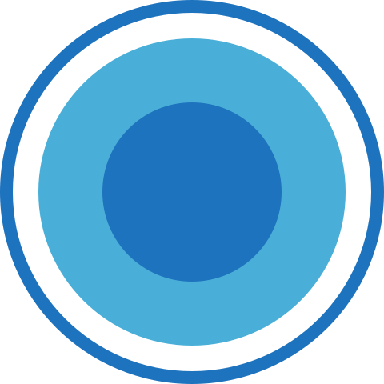

POČETNA
POČETNA PAKETI
PAKETI DIJALOG
DIJALOG REŠAVANJE PRIGOVORA
REŠAVANJE PRIGOVORA RAZGOVORI
RAZGOVORISCENARIJA
-
 Pukne guma, struja, pneumatik...
-
Scenario 1: Evo baš sam imao asistenciju pre tri dana... Moj/ moja korisnik/ca Lazar Kovačević/ Dragani Ninčić iz Pančeva, krenuo/la je na posao i video/la da su mu /joj obe prednje gume na autu izduvane. Nije imao/la dve rezervne gume da ih promeni, u trenutku je kaze pobesneo/la ali kad se setio/la da ima nasu pomoc na putu pozvao/la nas je , mi smo stigli do nega/ne za 20 min, odslepali ga/je do prvog najblizeg vulkanizera, jednu rezervnu koju je imao/la su mu/joj zamenili a drugu su zakrpili i vratii i bilo je sve zavrseno za manje od sat vremena. Lazar /Dragana je bilo/la prezadovoljan, zahvalio/la se jer je sve organizovano tako brzo da nije puno ni zakasnio/la na posao, a problem je rešen. Kasnije kada smo se čuli, preporučio/ la mi je još 7 svojih prijatelja,koje sam obezbedio.
Scenario 2: Evo, baš sam pre 2 dana imao asistenciju. Moj korisnik Lazar Kovačević iz Pančeva, vraćao se iz Beograda kući sa posla, i kako kaže:" Izašao sam iz firme, seo sam u auto i okrenem ključ da startujem motor, a on ne reaguje. Ja probam nekoliko puta, auto neće i dalje da upali!!!".Već je kasnio po suprugu koja isto radi u Beogradu, a deca su im bila sama kod kuće. Niko od njegovih kolega sa posla nije imao kablove za paljenje, i Lazar je pozvao nas. Mi smo došli do Lazara, dopunili akumulator, on je upalio auto i stigao je po suprugu i problem je bio rešen. Kasnije kada smo se čuli da obnovi paket, Lazar mi je preporučio 7 svojih prijatelja koje sam obezbedio.
-
Šlepanje 100km...
-
Scenario 1: Baš sam prošli vikend imao asistenciju gde je mom korisniku Saši Vukosavljeviću iz Aleksinca stao automobil na auto putu, kada je išao sa porodicom do ženinih u Niš. U toku vožnje je primetio da mu se motor čuje glasnije nego obično, ali pošto je bio nadomak Niša, nije hteo da staje. Dodao je gas ali odjednom je motor izgubio snagu i nije hteo da vuče.... Kako mi je kasnije Saša rekao, otišla mu je turbina. Parkirao je auto u desnoj traci, pozvao je nas, naše kolege su stigli u kratkom roku, ustanovili su kvar i odšlepali su auto do Niša kod majstora. Obezbedili smo prevoz za Sašu i celu porodicu, a Saša mi je kada smo se čuli da obnovi paket, dao još 9 preporuka svojih prijatelja koje sam obezbedio.
Scenario 2: Baš sam pre 4 dana imao asistenciju, gde je moj korisnik Saša Vukosavljević iz Zrenjanina, krenuo na produženi vikend sa porodicom do Zlatibora. Na novom auto putu Miloš Veliki pre isključenja za Valjevo, u toku vožnje auto počne da mu podiže obrtaje motora. On, šta će? Zaustavio svoj automobil u krajnje desnoj traci(a tamo znate vec, sigurno ste prolazili ni pumpe ni kuceta ni maceta) malo je sačekao da se motor ohladi, i na sve to kaze meni Saša kad sam baksuz nailazi policija, odmah su naravno stali i hteli da mu pišu kaznu i da zovu šlep službu da ga sklone sa puta. Saša je rekao da ima našu pomoć na putu i pozvao je naše kolege, koji su iz Čačka stigli za manje od pola sata, pogledali su šta je sa Sašinim autom, ustanovili su da je u pitanju kvar potenciometra koji je uzrok visokom broju obrtaja i odšlepali su njegov auto do servisa. Takođe, organizovali smo prevoz svih članova porodice do Čačka. Majstori su zamenili potenciometar i oni su nastavili put do Zlatibora. Kasnije kada sam se čuo sa Sašom da obnovi paket, pored toga što mi se zahvalio na brzoj intervenciji naših kolega, poslao mi je preoruke za 9 svojih prijatelja koje sam obezbedio.
-
Izvlačenje vozila
-
(___________), SLETELI STE SA PUTA!!!! Auto vam se zaglavio u kanalu u blatu, ne možete sami da se izvučete.U TAKVIM SITUACIJAMA, MI VAS IZVLAČIMO!
Scenario 1: Pre 10-ak dana sam baš imao situaciju gde su kolege izvlačile auto mog korisnika Branislava Zeljkovića iz Šapca. Kaže, vraćao se nazad za Šabac iz Novog Sada, i na Iriškom vencu vidi da džip, koji je vozio mlad čovek, pretiče kolonu kamiona koji su se kretali uzbrdo, i on da bi izbegao direktan sudar, skrene sa puta, udari u bankinu, preleti je i završi u kanalu. Guma iskidana, plastike od auta na sve strane.A ovaj sa džipom ni da se zaustavi....!!!!! Kada je došao malo sebi, pozvao nas je, a mi smo morali na kraju da ga izvlačimo sa dve šlepe jer je bio nezgodno zaglavljen u kanalu. Odšlepali smo ga do Šapca, čovek se zahvalio kolegama i meni na pomoći i posle par dana stigne nam balon sa tri litre rakije. Preporučio nam je 9 svojih prijatelja koje smo obezbedili, jer im je ispričao šta je doživeo i kako smo mu MI POMOGLI!